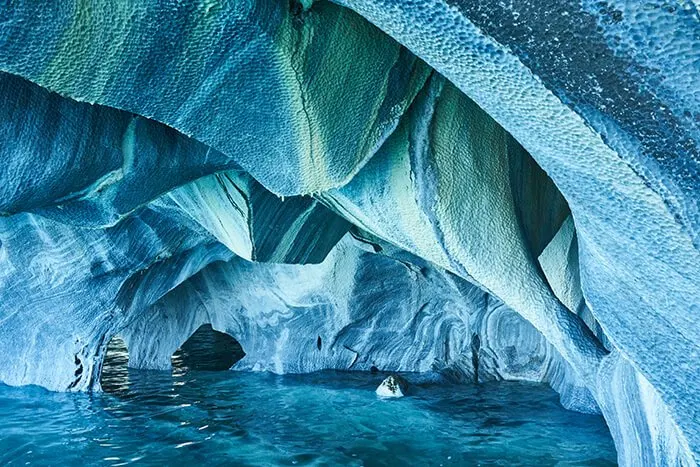

Vacation spots
There are many travel destinations to choose from each with their own rich cultures and special attractions therefore,it can be tricky to decide which one to take a trip to. The secret is picking one then work your way through them all.Below are my best three travel destinations:
Cappadocia in Turkey
Plitvice Lakes, Croatia
Marble Caves in Argentina
Cappadocia is likely one of the most intriguing vacation spots in the world.
This is because of its fascinating, unique, and borderline bizarre natural structures known as fairy chimneys.
These are geological formations made from rock, shaped in cones, that form in a variety of sizes as volcanic ash solidifies.
On top of this interesting phenomenon, Cappadocia also hosts underground structures of all kinds that served as homes, stores, and cities all the way in the 4th century.
You can even spot some Byzantine art in monasteries.
Read More
Plitvice Lakes, Croatia
The Plitvice Lakes can be found on Croatia’s Adriatic Sea coast, just lingering on the border between Zadar and the nation’s capital, Zagreb.
These lakes consist of 16 bodies of water that are all joined together by a variety of cascading waterfalls and fascinating bridges, flanked by age-old emerald forests that hold wildlife aplenty: birds, wolves, bears, and more!
Enjoy walks in one of the top travel destinations in the country across a variety of paths, both natural and man-made, and explore the wide expanse between the lowest altitude lakes of 280 meters and the highest 1,000 meters above it.
 Click for more information
Click for more information
Marble Caves in Argentina
The Marble Caves are among the best places to visit if you are a fan of unreal sights that you can barely believe exist.
These caves are found on the border of Chile and Argentina, on the General Carrera Lake, and they are formed through tunnels and caverns that hold some of the most important and beautiful marble depositions the world has to offer.
You’ll be able to see the marble reflected in the vivid water beneath, changing in appearance with the tide and as the seasons turn.

Marble Caves
Favourite Travel Destinations